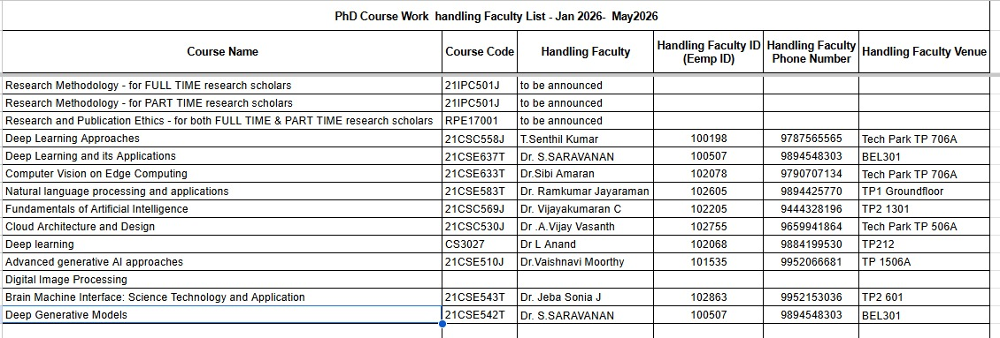

Institute Schedules & Official Updates
This section of the Doctoral Research Workspace serves as the central reference point for all official schedules, notifications, and academic updates received from the institute, doctoral committee, and research supervisor.
Maintaining a structured and up-to-date record of institutional communications ensures academic compliance, timely action, and traceability throughout the PhD lifecycle.
Academic Calendar & Key Milestones
- Coursework Registration Period: DD-MM-YYYY
- Coursework Examination Schedule: DD-MM-YYYY
- Doctoral Committee (DC) Meetings: 27JAN2026
- Synopsis Submission Window: As approved by the Doctoral Committee
- Progress Review Submissions: Half-yearly / Annual
- Subject Selection:
-

- 21IPC501J - Research Methodology
- RPE17001 - Research and Publication Ethics
- 21CSC530J- CLOUD ARCHITECTURE AND DESIGN
- 3. 21CSE637T-Deep Learning and its Applications
These milestones are tracked to align research progress with institutional timelines and regulatory requirements.
Pending Tasks to be Done
This subsection archives all Pending tasks relevant to my PhD program, including:
- DC Meeting Slides Preparation : to be done by 20-01-2026
This section tracks the tasks to be done to get a clear picture of the progress.
Official Notifications & Circulars
This subsection archives all official communications relevant to my PhD program, including:
- Notices from the Research & Development (R&D) / PhD Section
- Circulars related to coursework, examinations, and evaluations
- Guidelines issued by the institute, UGC, or affiliating bodies
- Any amendments to PhD regulations or procedures
Each update is preserved to ensure clarity, accountability, and reference during audits, reviews, or committee discussions.
Updates from Supervisor & Doctoral Committee
This section documents academic instructions, feedback, and action items received from:
- Research Supervisor / Co-Supervisor
- Doctoral Committee members
- Departmental Research Review Boards
Recording these updates helps ensure that committee recommendations are systematically implemented and reflected in subsequent research work.
Purpose of Maintaining This Section
The intent of maintaining this page within the Doctoral Research Workspace is to:
- Demonstrate research discipline and administrative awareness
- Avoid missing critical deadlines or institutional requirements
- Provide a single source of truth for PhD-related schedules and updates
- Support transparency during DC meetings and progress reviews
This structured approach reflects a professional, process-oriented mindset expected of a doctoral researcher.